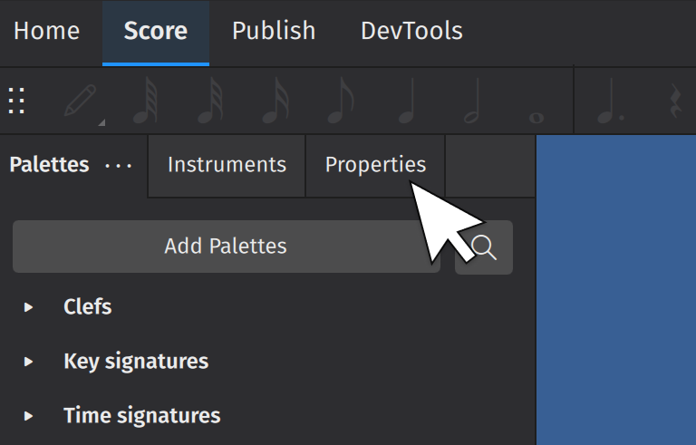
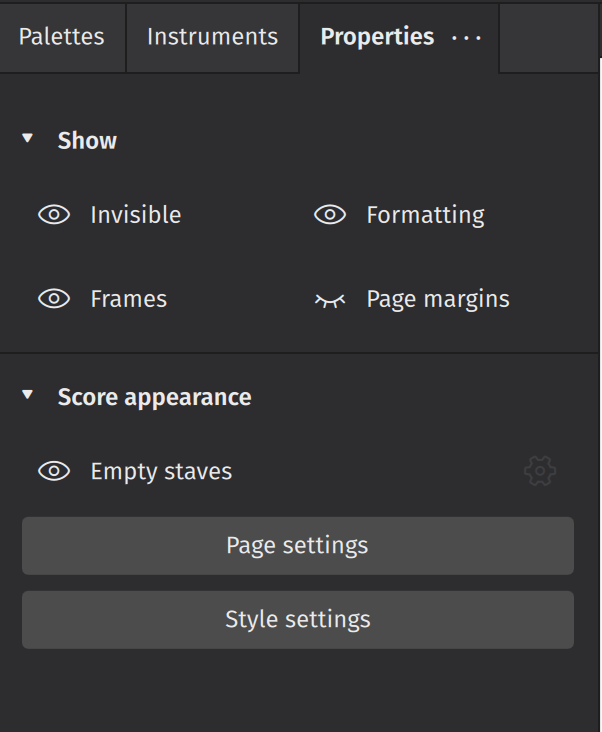
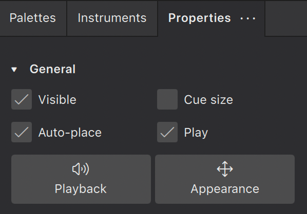
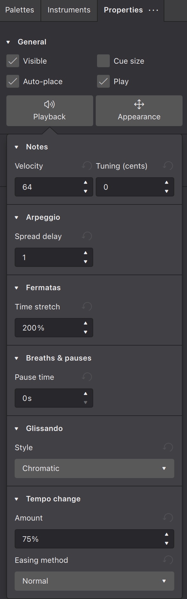
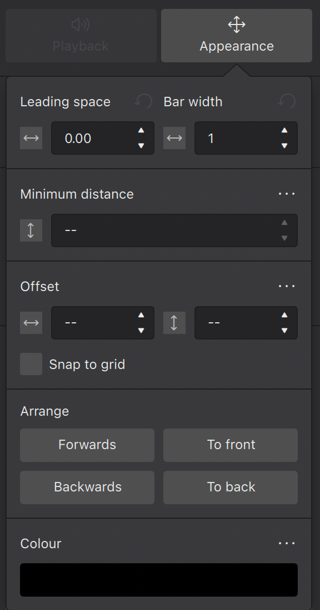

Properties panel
The Properties panel shows settings for objects you select in the score. It was known as the “Inspector” in MuseScore 2 and 3.
You can select one object (say, a dynamic mark) or multiple objects at a time (say, a dynamic mark, a notehead, and a hairpin). If any of the objects you have selected contains editable settings, Properties is the place to find them.
An important thing about Properties is that by default it affects only the object(s) you have selected, so changing how one hairpin looks won’t change all of the hairpins in your score—only those you have selected. However, for most settings, you can save as the default style for the score.
Accessing the Properties panel
- Open the Score tab
- Press the default keyboard shortcut
F8, or click on the Properties tab on the left side of the screen.

Global settings
This is what the Properties panel looks like when you have nothing selected in your score. All these settings affect your entire score (not just individual elements):

Show
- Invisible hides/shows all invisible objects in your score
- Frames hides/shows Frames
- Formatting hides/shows formatting elements added from the layout palette
- Page margins hides/shows the page margin
- Sound flags hides/shows sound flag buttons on stave text
Score appearance
- Empty staves hides/shows staves that contain no notated music within a system. This setting mirrors the Hide empty staves within systems settings in the Style dialog.
- Page settings opens the Page settings dialog. Same as Format→Page Settings. See Templates and styles.
- Style settings opens the Style dialog. Same as Format→Style. See Templates and styles.
General settings
These settings are visible whenever something is selected in your score.

Visible
Click this box to hide/unhide selected elements, or use the keyboard shortcut V.
Use this feature to hide elements so they don't appear in your exported or printed score. This can be useful when, for example, applying tempo marks or dynamics solely to affect playback in MuseScore. Use the Invisible toggle in Properties (when nothing is selected) to show or hide these hidden elements in the score view (hidden elements will be rendered in a lighter shade).
Auto-place
Usually checked by default, this feature positions the selected object according to MuseScore's vertical and horizontal collision avoidance algorithms. Uncheck Auto-place to have more control over the positioning of certain elements. Learn more about this feature in Positioning elements.
Cue size
This feature is used to create small cue notes: i.e. notes provided to assist the performer by indicating what another ensemble/orchestra member is playing at the same time. Checking the box makes any selected notes smaller, including their stems and any attached beams.
Play
When checked, this property allows playback of the selected element. Uncheck Play to silence the element.
Playback settings
The Playback button displays the editable playback properties of the selected elements.

Under the Playback button, playback properties are shown if the selected elements have any.
Velocity
Only notes have the Velocity property. The valid range is 1 to 127. This property is usable for instruments using Soundfonts.
This property has no effect on instruments using Muse Sounds. See Dynamics for changing loudness of playback on instruments using Muse Sounds.
Tuning
Used to adjust the tuning of notes in cents. Only notes have the Tuning property.
Appearance settings

Leading space
This changes the leading space of selected elements: i.e. the space in front of the element. The leading space adjustment is applied across all staves, so that notes at the same time position remain aligned.
Bar width
This changes the width of the measure as a proportion of the original width: e.g. 1.5 = one-and-a-half times the default width.
Minimum distance
This is used by the auto-place collision avoidance algorithm and applies only to elements that are applied above/below the stave by default, such as stave text, dynamics, fingerings, lines etc. It sets the minimum distance (in sp.) of the selected objects from other elements that are closer to the stave, or the stave itself.
Offset
When newly applied, elements assume a default position. The horizontal/vertical offsets give you a more precise way of positioning an element than dragging it or moving with the keyboard arrows.
Snap to grid
This feature allows you to constrain drag operations to increments of a desired distance. First you need to check the Snap to grid box, then press Configure grid and set the desired horizontal/vertical step distances.
You can switch Snap to grid on/off as required by checking/unchecking the box.
Arrange
The four buttons in this section control how overlapping elements are drawn.They work as follows:
- Forwards moves the selected element in front of the next element
- Backwards moves the selected element behind the next element
- To front moves the selected element in front of all other elements.
- To back moves the selected element behind all other elements, including the stave lines.
Colour
Click on this button to change the colour of selected element(s). Choose a preset or custom colour, or create your own by clicking the + button. This is stored for future reference in the list of custom colours to the right.
Properties for characters inside text objects
When Text object(s) are selected (the object, not the characters), the Properties panel shows the formatting settings of the Text object. Editing these properties may affect all of the characters inside.
When character(s) inside a Text object are selected, the Properties panel shows the formatting settings of the characters. Editing these properties only changes the selected characters. See Formatting text.
Saving and restoring default settings
After changing any given setting, you can click the "three dots" menu button adjacent to the setting to reveal a menu that allows you to either Reset the setting to the default for the score, or Save as default style for this score. The latter option is only available for properties that correspond to style settings, but this includes many of the properties in this panel.